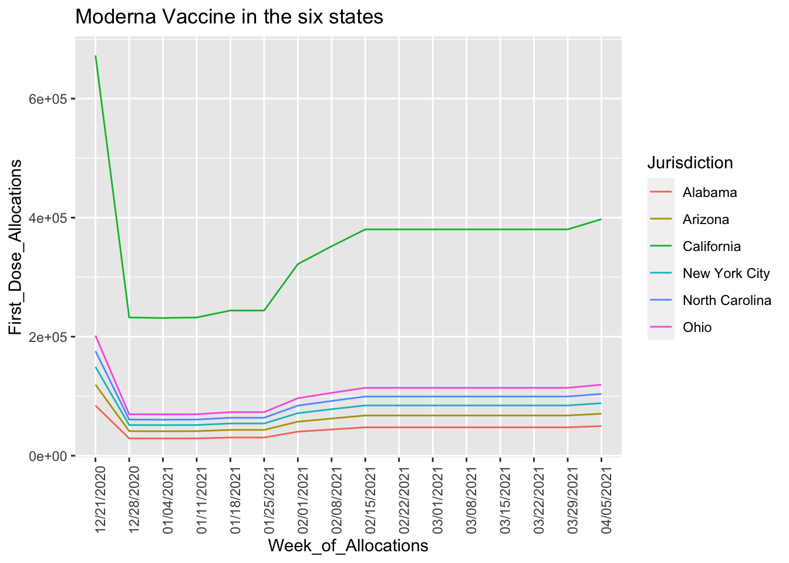
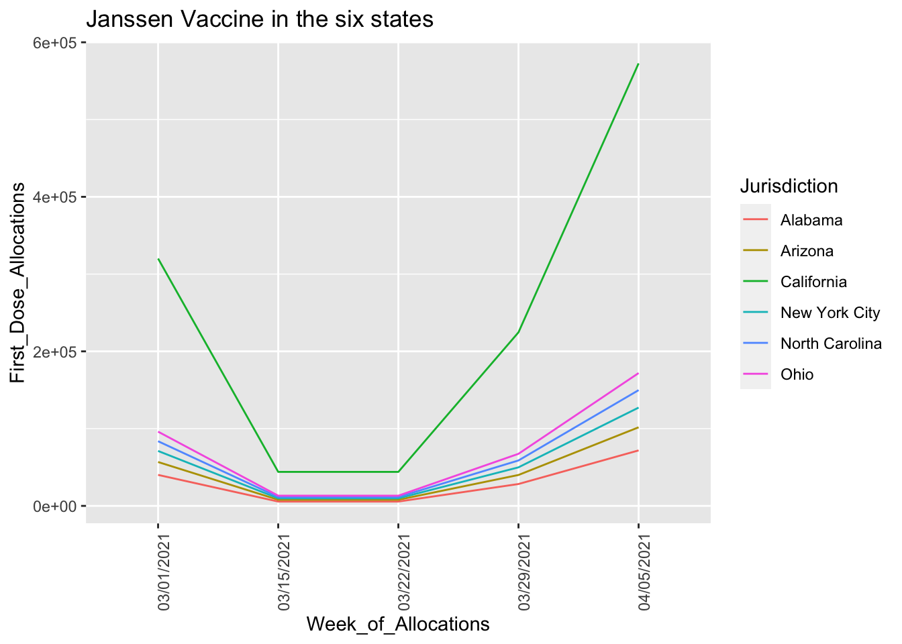

Chapter 10 V. Results
# plot number of cases confirmed by state
# we can see that some states a severely higher than others
library(ggplot2)
library(dplyr)
library(plotly)
case_plot <- plot_geo(tot_dc_ll,
locationmode = 'USA-states') %>%
add_trace(locations = ~state,
z = ~tot_case) %>%
layout(geo = list(scope = 'usa'),
title = ' \n Total number of covid confirmed by state')
death_plot <- plot_geo(tot_dc_ll,
locationmode = 'USA-states') %>%
add_trace(locations = ~state,
z = ~tot_death) %>%
layout(geo = list(scope = 'usa'),
title = ' \n Total number of people died')
case_plotdeath_plot# we want to see which states are falling behind
# we need to make more effort for the states that are less than 30% of vaccination rate from the graph
# Vaccination rate by state
vaccination_us_new <- subset(vaccination_us, Percent.of.Total.Pop.with.at.least.One.Dose.by.State.of.Residence > 0 )
vaccination_us_new$State.Territory.Federal.Entity <- factor(vaccination_us_new$State.Territory.Federal.Entity, levels = vaccination_us_new$State.Territory.Federal.Entity[order(vaccination_us_new$Percent.of.Total.Pop.with.at.least.One.Dose.by.State.of.Residence)])
p<-ggplot(data=vaccination_us_new, aes(x=Percent.of.Total.Pop.with.at.least.One.Dose.by.State.of.Residence
, y=State.Territory.Federal.Entity, fill = 'Percent'
)) +
geom_bar(stat="identity", color="#69b3a2")+
ggtitle("Vaccination rate by states")+
theme(plot.title = element_text(size=50))+
geom_text(aes(label = Percent.of.Total.Pop.with.at.least.One.Dose.by.State.of.Residence), vjust = -0.2)
p
# Horizontal bar plot# we see number of cases and death over time
library(ggplot2)
library(dplyr)
# clean the data - removed daily new case and daily new death where the number is negative
case_dath_clean_overtime_new <- subset(case_dath_clean_overtime_d, new_case > 0 )
case_dath_clean_overtime_new <- subset(case_dath_clean_overtime_new, new_death > 0)
case_dath_clean_overtime_new$submission_date = as.Date(case_dath_clean_overtime_new$submission_date)
case_dath_clean_overtime_new <- subset(case_dath_clean_overtime_new, submission_date > 2021-01-22)
p_daily_new <- ggplot(case_dath_clean_overtime_new, aes(x=submission_date, y=new_case)) +
geom_line() +
scale_x_date(date_labels = "%Y %b %d")+
geom_line( color="#69b3a2")+
ggtitle("Daily new case")+
theme(plot.title = element_text(size=30))+
xlab("")
p_daily_death <- ggplot(case_dath_clean_overtime_new, aes(x=submission_date, y=new_death)) +
geom_line() +
scale_x_date(date_labels = "%Y %b %d")+
ggtitle("Daily new death")+
theme(plot.title = element_text(size=30))+
geom_line( color="#69b3a2")+
xlab("")
p_daily_new
p_daily_death# who we should target to get vaccinated by ethnicty and age group
# from the graph we found that not a lot people from the age 0-49 are vaccinated. we should target them in the future
vaccination_age$Fully_Vaccinated[vaccination_age$Fully_Vaccinated == 'No'] <- '1 dose'
vaccination_age$Fully_Vaccinated[vaccination_age$Fully_Vaccinated == 'Yes'] <- 'Fully Vaccinated'
p<-ggplot(data=vaccination_age, aes(x=Age.Group
, y=Percentage
)) +
geom_bar(stat="identity", fill="steelblue")+
geom_text(aes(label = Percentage))+
ggtitle("Vaccination rate by age group")+
theme(plot.title = element_text(size=30))+
facet_wrap(~Fully_Vaccinated)
p + coord_flip()
# who we should target to get vaccinated by ethnicity and age group
# from the graph we found that only the people belong to white ethnicity group doing pretty good on vaccination.
# we need to make more effort on other ethnicity group
vaccination_race$Fully_Vaccinated[vaccination_race$Fully_Vaccinated == 'No'] <- '1 dose'
vaccination_race$Fully_Vaccinated[vaccination_race$Fully_Vaccinated == 'Yes'] <- 'Fully Vaccinated'
p<-ggplot(data=vaccination_race, aes(x=Race.Ethnicity
, y=Percentage
)) +
geom_bar(stat="identity", fill="steelblue")+
geom_text(aes(label = Percentage))+
ggtitle("Vaccination rate by race")+
theme(plot.title = element_text(size=15))+
facet_wrap(~Fully_Vaccinated)
p + coord_flip()